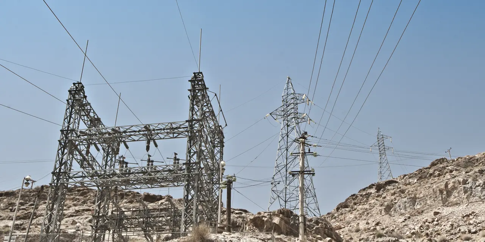

산업분야와 테마 주가는 서로 따로 움직이는 것처럼 보이지만, 실제 시장에서는 한쪽의 투자 증가가 다른 쪽의 주문과 병목을 만들어 순차적으로 번지는 일이 자주 생깁니다. 반도체가 먼저 오르고, 뒤이어 서버, 전력장비, 냉각, 발전설비, 원자재, 금융까지 관심이 옮겨가는 식입니다. 이것을 단순히 순환매라고 부를 수도 있지만, 투자자가 더 정확히 봐야 할 표현은 산업 사이클입니다.
산업 사이클은 “이미 오른 종목 다음에 덜 오른 종목을 사면 된다”는 간단한 공식이 아닙니다. 핵심은 돈이 어디에서 실제 주문으로 바뀌고, 그 주문이 어느 회사의 매출과 현금흐름으로 넘어가는지 추적하는 일입니다. 주가는 뉴스를 따라 움직이는 듯 보이지만, 오래 버티는 상승은 대체로 수주잔고, 설비투자, 공급 부족, 마진 개선, 현금흐름 개선으로 확인됩니다.
최근 가장 보기 쉬운 예는 AI 인프라입니다. 엔비디아가 GPU 수요의 중심에 섰다면, 그 다음 질문은 “그 GPU를 꽂을 데이터센터가 충분한가”입니다. 데이터센터가 늘면 서버 랙, 전력 변환, 냉각, UPS, 변전설비, 송전망, 발전설비가 함께 필요합니다. 그래서 NVDA만 보는 투자자는 AI 사이클의 첫 장면만 보고 있을 수 있습니다. VRT, ETN, GEV 같은 종목을 함께 봐야 AI 투자가 실제 인프라 병목으로 어디까지 번지는지 읽을 수 있습니다.
산업 사이클은 가격이 아니라 병목이 이동하는 순서입니다

산업 사이클을 볼 때 출발점은 “어떤 테마가 유행인가”가 아니라 “어디가 막히고 있는가”입니다. 막힌 곳은 가격 결정력을 갖습니다. 공급이 충분한 기업은 매출은 늘어도 마진이 약할 수 있습니다. 반대로 병목을 쥔 기업은 같은 수요 증가에서도 주문, 가격, 납기, 서비스 매출을 동시에 얻을 수 있습니다.
예를 들어 AI 투자가 늘 때 시장은 처음에 GPU를 봅니다. 이유는 간단합니다. AI 모델 훈련과 추론의 직접 병목이 연산장비이기 때문입니다. 그런데 GPU가 공급되고 나면 다음 병목은 전력입니다. 서버가 아무리 많아도 데이터센터가 전기를 안정적으로 받지 못하면 가동률이 올라가지 않습니다. 전력이 확보되면 냉각과 전력변환 장비가 필요해지고, 그 다음에는 지역 전력망과 발전 용량이 문제가 됩니다.
StockCharts의 섹터 로테이션 설명처럼 전통적인 순환매 분석은 경기 국면별로 강한 업종이 달라진다는 관점에서 출발합니다. 그러나 AI 같은 구조적 테마에서는 경기 국면만으로 충분하지 않습니다. 더 중요한 것은 설비투자 사슬입니다. 첫 번째 수혜 기업의 매출이 확정되면, 그 매출을 가능하게 하는 주변 인프라 기업의 수주가 뒤따르는지 확인해야 합니다.
그래서 투자자는 차트 순서만 보지 말고 산업의 작업 순서를 봐야 합니다. 칩이 만들어지고, 서버가 조립되고, 데이터센터가 지어지고, 전력이 연결되고, 냉각 시스템이 들어가고, 발전설비와 송전망 투자가 따라붙습니다. 주가가 같은 순서로 반드시 움직인다는 뜻은 아니지만, 숫자가 확인되는 순서는 대체로 이 흐름에서 크게 벗어나지 않습니다.
AI 테마는 GPU에서 전력과 냉각으로 번지고 있습니다
관련 영상
주식투자는 섹터 순환매를 알아야 합니다
AI 산업 사이클의 첫 번째 장면은 엔비디아입니다. 엔비디아 실적 발표에서 데이터센터 매출이 핵심 축으로 남아 있다는 점은 AI 투자가 아직 연산 인프라에 집중되어 있음을 보여줍니다. 하지만 투자자가 여기서 멈추면 다음 질문을 놓칩니다. GPU 수요가 계속되려면 데이터센터가 더 많이 지어져야 하고, 데이터센터가 더 많이 지어지려면 전력과 냉각이 따라와야 합니다.
이 지점에서 버티브가 등장합니다. 버티브의 2026년 1분기 발표는 데이터센터 전력·열관리 장비가 단순 부품이 아니라 AI 인프라 투자 사슬의 병목이 될 수 있음을 보여줍니다. 매출 성장, 주문 증가, 백로그, 조정 영업이익률 같은 숫자가 함께 좋아지면 “AI가 실제 장비 주문으로 번지고 있다”는 신호가 됩니다.
전력 변환과 배전 쪽에서는 이튼을 봐야 합니다. 이튼의 2026년 1분기 발표에서 전기 부문 매출과 수익성이 강하게 유지된다면, 데이터센터와 전기화 투자가 전기장비 주문으로 이어지고 있다는 뜻입니다. GPU가 직접 AI를 계산한다면, 이튼은 그 GPU를 계속 켜 둘 전기 인프라를 맡는 쪽에 가깝습니다.
마지막으로 GE 버노바는 더 긴 사이클을 보여줍니다. GE 버노바의 2026년 1분기 발표는 발전설비와 전력망 투자가 단기 테마를 넘어 장기 주문잔고로 바뀌는지 확인하는 자료입니다. AI 데이터센터가 전력 수요를 늘린다면, 그 수요는 결국 터빈, 그리드 장비, 전력 서비스, 송전망 확충으로 이어집니다. 여기까지 와야 AI 테마가 주식시장 구호가 아니라 산업투자 사이클로 바뀌었다고 볼 수 있습니다.
순차 상승을 확인하는 세 가지 숫자
산업 사이클을 실제 투자 판단으로 옮기려면 세 가지 숫자를 봐야 합니다. 첫째는 주문입니다. 매출보다 먼저 움직이는 주문과 수주잔고는 다음 분기와 다음 해의 매출 가능성을 보여줍니다. 둘째는 마진입니다. 수요가 많아도 가격을 못 올리면 주가는 오래 버티기 어렵습니다. 셋째는 현금흐름입니다. 설비투자와 운전자본 부담이 너무 크면 성장해도 주주에게 남는 돈이 늦어집니다.
엔비디아에서는 데이터센터 매출과 대형 고객 집중도, 공급 약속, 매출총이익률을 봐야 합니다. 버티브에서는 백로그와 조정 영업이익률이 중요합니다. 이튼에서는 전기 부문 주문과 마진이 핵심입니다. GE 버노바에서는 주문, 서비스 매출, 잉여현금흐름 전환이 중요합니다. 네 회사가 모두 AI라는 말로 묶일 수 있지만, 투자자가 확인할 숫자는 서로 다릅니다.
| 순서 | 대표 종목 | 산업 사이클 안의 역할 | 확인할 숫자 |
|---|---|---|---|
| 1 | NVDA 엔비디아 | AI 연산 병목 | 데이터센터 매출, 매출총이익률, 공급 약속 |
| 2 | VRT 버티브 | 데이터센터 전력·냉각 병목 | 주문, 백로그, 조정 영업이익률 |
| 3 | ETN 이튼 | 전기장비와 배전 인프라 | 전기 부문 매출, 유기적 성장률, 마진 |
| 4 | GEV GE 버노바 | 발전설비와 전력망 장기 투자 | 주문, 서비스 매출, 잉여현금흐름 |
이 표에서 중요한 점은 순서가 고정된 매수 순서가 아니라는 것입니다. 시장은 때로 첫 번째 종목이 쉬기 전에 네 번째 종목을 먼저 가격에 반영합니다. 또는 전력망 주식이 오른 뒤 다시 반도체로 돈이 돌아오기도 합니다. 그래서 순차 상승을 볼 때는 “다음이 누구인가”보다 “다음 병목의 숫자가 실제로 확인되는가”를 먼저 봐야 합니다.
예를 들어 버티브의 백로그가 늘어도 마진이 떨어지면 병목 프리미엄은 약해집니다. 이튼의 전기 부문 매출이 늘어도 운전자본 부담이 커지면 현금흐름은 늦어질 수 있습니다. GE 버노바의 주문이 좋아도 프로젝트 납기와 원가 관리가 흔들리면 주가는 기대보다 빨리 식을 수 있습니다. 산업 사이클은 좋은 이야기만 이어지는 길이 아니라, 각 단계마다 숫자로 통과해야 하는 검문소에 가깝습니다.
다음 주자는 후발주자가 아니라 병목 보유 기업입니다
산업 사이클을 잘못 이해하면 이미 덜 오른 종목을 무조건 다음 주자로 고르게 됩니다. 그러나 시장은 후발주자를 보상하는 것이 아니라 병목을 보유한 기업을 보상합니다. 뒤에 있는 기업이라도 공급이 흔하고 가격 결정력이 약하면 순환매가 짧게 끝날 수 있습니다. 반대로 이미 오른 기업이라도 다음 병목까지 쥐고 있으면 프리미엄이 오래 유지될 수 있습니다.
AI 인프라에서 버티브가 관심을 받는 이유는 단순히 엔비디아 다음에 있다는 점 때문이 아닙니다. 고밀도 데이터센터는 열을 빼내고 전력을 안정적으로 공급하는 일이 점점 어려워집니다. 이 문제가 실제 프로젝트 지연이나 비용 증가로 이어지면 전력·냉각 장비 기업의 협상력이 커질 수 있습니다. 이것이 병목 프리미엄입니다.
이튼과 GE 버노바도 마찬가지입니다. 전력장비와 발전설비는 단기간에 공급을 늘리기 어렵고, 인허가와 납기가 길며, 고객은 신뢰성과 서비스 역량을 중요하게 봅니다. AI 수요가 전력 수요로 확산되는 구간에서는 이런 장기 공급 제약이 주가의 근거가 될 수 있습니다. 다만 장기 프로젝트는 원가 상승과 납기 리스크도 함께 갖습니다. 그래서 긍정 논리와 리스크를 같은 화면에서 봐야 합니다.
투자자가 할 일은 테마 이름을 외우는 것이 아니라 병목 지도를 그리는 것입니다. 첫째, 최종 수요가 실제로 커지고 있는지 확인합니다. 둘째, 그 수요를 처리하는 데 필요한 부품과 설비를 나열합니다. 셋째, 그중 공급이 가장 느리게 늘어나는 곳을 찾습니다. 넷째, 그 병목을 가진 회사의 주문과 마진이 개선되는지 확인합니다. 이 네 단계를 거치면 단순 순환매보다 훨씬 현실적인 후보를 찾을 수 있습니다.
순환매를 볼 때 가장 조심할 착시는 이미 늦은 수혜입니다
산업 사이클 글을 읽을 때 가장 위험한 착시는 “A가 올랐으니 B도 반드시 오른다”입니다. 시장은 그렇게 친절하게 움직이지 않습니다. B가 오르려면 A의 수요가 B의 매출로 넘어가야 하고, B의 공급이 제한되어야 하며, B의 비용 구조가 주주에게 남는 이익을 만들어야 합니다. 이 세 가지가 빠지면 순환매는 며칠짜리 이야기로 끝납니다.
또 하나의 착시는 주가가 오른 순서를 산업의 실제 순서로 착각하는 것입니다. 어떤 때는 시장이 1년 뒤 병목을 미리 가격에 넣습니다. 반대로 실제 주문은 이미 좋아졌는데 주가는 금리, 밸류에이션, 포지션 정리 때문에 늦게 반응하기도 합니다. 그래서 산업 사이클을 볼 때는 차트와 실적 발표를 같이 읽어야 합니다. 차트만 보면 기대를 보고, 실적만 보면 속도를 놓칠 수 있습니다.
AI 인프라 투자자가 지금 점검할 질문은 명확합니다. 엔비디아의 데이터센터 수요가 얼마나 오래 유지되는가, 버티브의 백로그가 마진을 지키며 매출로 바뀌는가, 이튼의 전기 부문 주문이 전력망 투자로 이어지는가, GE 버노바의 발전·그리드 주문이 현금흐름으로 남는가입니다. 이 네 질문이 동시에 좋아지면 AI 테마는 단일 반도체 테마가 아니라 전력 인프라 산업 사이클로 넓어집니다.
결론적으로 산업 사이클은 있습니다. 다만 그것은 자동으로 이어지는 주가 공식이 아니라, 수요와 병목과 숫자를 따라가는 관찰 방법입니다. 독자가 다음 테마를 찾고 싶다면 “아직 덜 오른 업종”보다 “방금 생긴 병목을 해결하는 회사”를 먼저 찾아야 합니다. AI 투자 사이클에서는 그 병목이 GPU에서 데이터센터 전력·냉각, 전기장비, 발전설비로 이동하고 있습니다. 이 이동이 실제 주문과 현금흐름으로 확인되는 순간, 시장은 또 한 번 다음 장면을 가격에 반영하기 시작합니다.